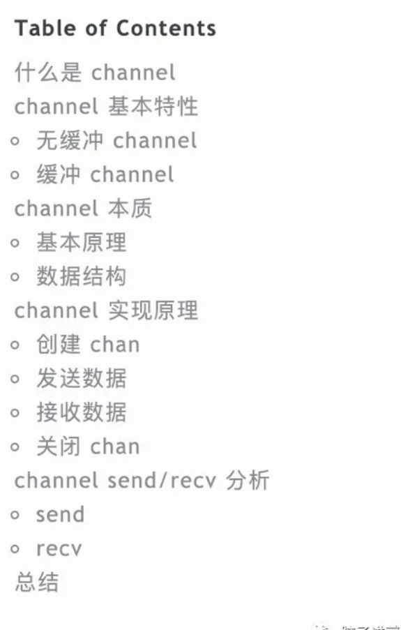
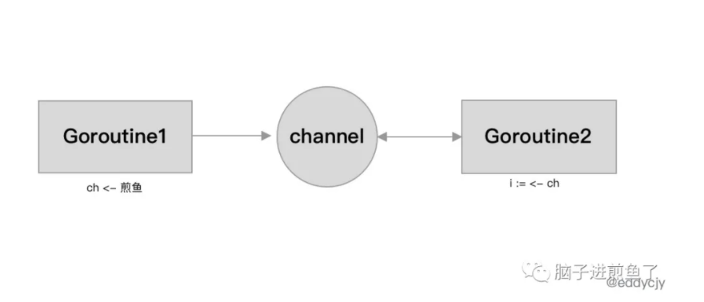
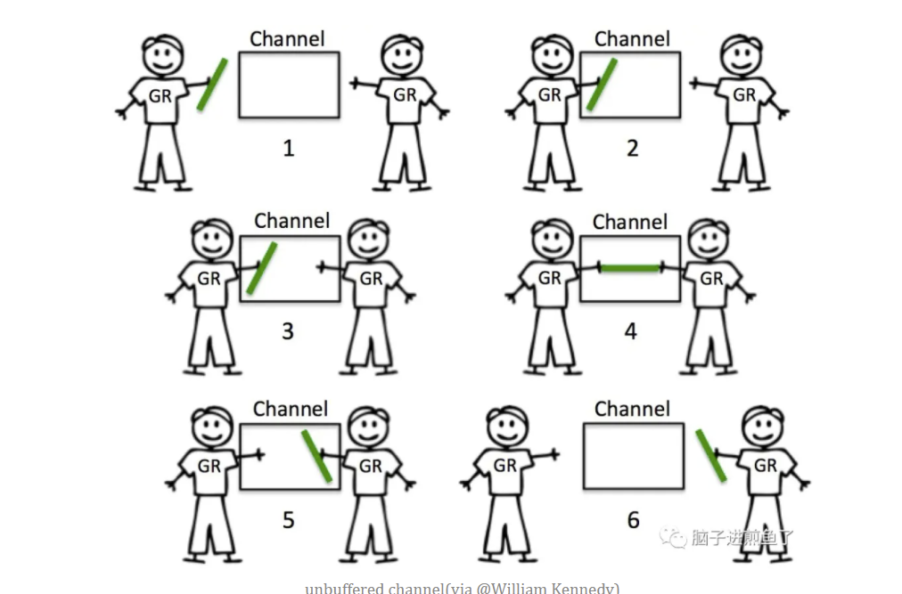
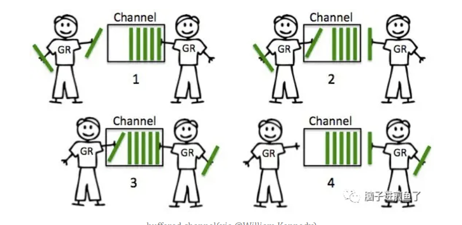
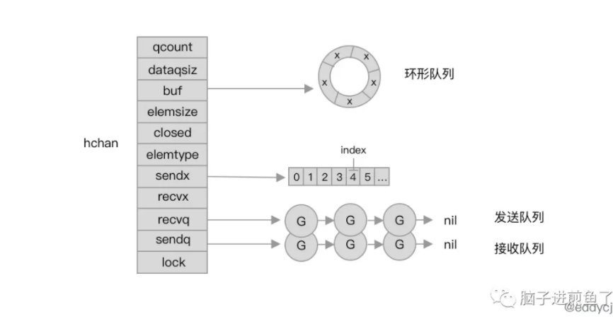
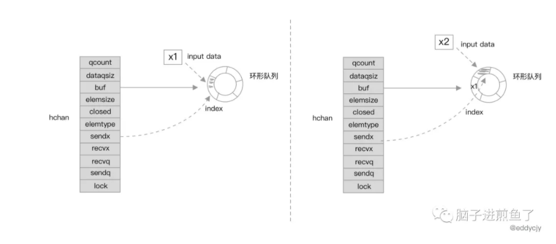
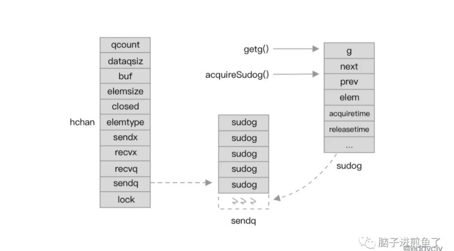

今天这篇文章主要是针对 Go channel 的重点分析，一开始写的时候以为范围不会太大，但洋洋洒洒还是写破了万字，成为了一篇覆盖面较广和有一定深度的长文分析。
Go 语言中的一大利器那就是能够非常方便的使用 go 关键字来进行各种并发，而并发后又必然会涉及通信。
Channel 自然而然就成为了 Go 语言开发者中必须要明白明了的一个 “东西” 了，更别提实际工程应用和日常面试了，属于必知必会。
本文目录：

什么是 channel
在 Go 语言中，channel 可以称其为通道，也可以叫管道。channel 主要常见于与 goroutine+select 搭配使用，再结合语录的描述。可以知道 channel 就是用于 goroutine 的数据通信：
演示代码如下：
1 | func main() { |
在 goroutine1 中写入 “煎鱼” 到变量 ch 中，goroutine2 监听变量 ch，并阻塞等待读取到值 “煎鱼” 最终返回，结束流程。
在此 channel 承载着一个衔接器的桥梁：

这也是 channel 的经典思想了，不要通过共享内存来通信，而是通过通信来实现内存共享（Do not communicate by sharing memory; instead, share memory by communicating）。
从模式上来看，其就是在多个 goroutine 借助 channel 来传输数据，实现了跨 goroutine 间的数据传输，多者独立运行，不需要强关联，更不影响对方的 goroutine 状态。不存在 goroutine1 对 goroutine2 进行直传的情况。
这里思考一个问题，那 goroutine1 和 goroutine2 又怎么互相知道自己的数据 ”到“ 了呢？
channel 基本特性
在 Go 语言中，channel 的关键字为 chan，数据流向的表现方式为 <-，代码解释方向是从左到右，据此就能明白通道的数据流转方向了。
channel 共有两种模式，分别是：双向和单向；三种表现方式，分别是：声明双向通道：chan T、声明只允许发送的通道：chan <- T、声明只允许接收的通道：<- chan T。
channel 中还分为 “无缓冲 channel” 和 “缓冲 channel”。
演示代码如下：
1 | // 无缓冲 |
接下来我们进一步展开这两类来看。
无缓冲 channel
无缓冲的 channel（unbuffered channel），其缓冲区大小则默认为 0。在功能上其接受者会阻塞等待并阻塞应用程序，直至收到通信和接收到数据。
这种常用于两个 goroutine 间互相同步等待的应用场景：

缓冲 channel
有缓存的 channel（buffered channel），其缓存区大小是根据所设置的值来调整。在功能上，若缓冲区未满则不会阻塞，会源源不断的进行传输。当缓冲区满了后，发送者就会阻塞并等待。而当缓冲区为空时，接受者就会阻塞并等待，直至有新的数据：

在实际的应用场景中，两者根据业务情况选用就可以了，不需要太过纠结于两者是否有性能差距，没意义。
channel 本质
channel 听起来实现了一个非常酷的东西，也是日常工作中常常会被面试官问到的问题。
但其实 channel 并没有那么的 “神秘”，就是一个环形队列的配合。
接下来我们一步步的剖开 channel，看看里面到底是什么，怎么实现的跨 goroutine 通信，数据结构又是什么，两者又如何实现数据传输的？
基本原理
本质上 channel 在设计上就是环形队列。其包含发送方队列、接收方队列，加上互斥锁 mutex 等结构。
channel 是一个有锁的环形队列：

数据结构
hchan 结构体是 channel 在运行时的具体表现形式：
1 | // src/runtime/chan.go |
- qcount：队列中的元素总数量。
- dataqsiz：循环队列的长度。
- buf：指向长度为 dataqsiz 的底层数组，仅有当 channel 为缓冲型的才有意义。
- elemsize：能够接受和发送的元素大小。
- closed：是否关闭。
- elemtype：能够接受和发送的元素类型。
- sendx：已发送元素在循环队列中的索引位置。
- recvx：已接收元素在循环队列中的索引位置。
- recvq：接受者的 sudog 等待队列（缓冲区不足时阻塞等待的 goroutine）。
- sendq：发送者的 sudog 等待队列。
在数据结构中，我们可以看到 recvq 和 sendq，其表现为等待队列，其类型为 runtime.waitq 的双向链表结构：
1 | type waitq struct { |
且无论是 first 属性又或是 last，其类型都为 runtime.sudog 结构体：
1 | type sudog struct { |
- g：指向当前的 goroutine。
- next：指向下一个 g。
- prev：指向上一个 g。
- elem：数据元素，可能会指向堆栈。
sudog 是 Go 语言中用于存放协程状态为阻塞的 goroutine 的双向链表抽象，你可以直接理解为一个正在等待的 goroutine 就可以了。
在后续的实现原理分析中，基本围绕着上述数据结构进行大量的讨论，建议可以认真思考一下。
channel 实现原理
在了解了 channel 的基本原理后，我们进入到与应用工程中更紧密相关的部分，那就是 channel 的四大块操作，分别是：“创建、发送、接收、关闭”。
我们将针对这四块进行细致的分析和讲解。因此接下来的内容比较庞大，内容上将分为两个角度来讲述，分别是先从源码角度进行分析，再进行图示汇总。以便于大家更好的理解和思考
创建 chan
创建 channel 的演示代码：
1 | ch := make(chan string) |
其在编译器翻译后对应 runtime.makechan 或 runtime.makechan64 方法：
1 | // 通用创建方法 |
通过前面我们得知 channel 的基本单位是 hchan 结构体，那么在创建 channel 时，究竟还需要做什么是呢？
我们一起分析一下 makechan 方法，就能知道了。
源码如下：
1 | // src/runtime/chan.go |
创建 channel 的逻辑主要分为三大块：
- 当前 channel 不存在缓冲区，也就是元素大小为 0 的情况下，就会调用
mallocgc方法分配一段连续的内存空间。 - 当前 channel 存储的类型存在指针引用，就会连同
hchan和底层数组同时分配一段连续的内存空间。 - 通用情况，默认分配相匹配的连续内存空间。
需要注意到一块特殊点，那就是 channel 的创建都是调用的 mallocgc 方法，也就是 channel 都是创建在堆上的。因此 channel 是会被 GC 回收的，自然也不总是需要 close 方法来进行显示关闭了。
从整体上来讲，makechan 方法的逻辑比较简单，就是创建 hchan 并分配合适的 buf 大小的堆上内存空间。
发送数据
channel 发送数据的演示代码：
1 | go func() { |
其在编译器翻译后对应 runtime.chansend1 方法：
1 | func chansend1(c *hchan, elem unsafe.Pointer) { |
其作为编译后的入口方法，实则指向真正的实现逻辑，也就是 chansend 方法。
前置处理
在第一部分中，我们先看看 chan 发送的一些前置判断和处理：
1 | func chansend(c *hchan, ep unsafe.Pointer, block bool, callerpc uintptr) bool { |
一开始 chansend 方法在会先判断当前的 channel 是否为 nil。若为 nil，在逻辑上来讲就是向 nil channel 发送数据，就会调用 gopark 方法使得当前 Goroutine 休眠，进而出现死锁崩溃，表象就是出现 panic 事件来快速失败。
紧接着会对非阻塞的 channel 进行一个上限判断，看看是否快速失败。
失败的场景如下：
- 若非阻塞且未关闭，同时底层数据 dataqsiz 大小为 0（缓冲区无元素），则会返回失败。。
- 若是 qcount 与 dataqsiz 大小相同（缓冲区已满）时，则会返回失败。
上互斥锁
在完成了 channel 的前置判断后，即将在进入发送数据的处理前，channel 会进行上锁：
1 | func chansend(c *hchan, ep unsafe.Pointer, block bool, callerpc uintptr) bool { |
上锁后就能保住并发安全。另外我们也可以考虑到，这种场景会相对依赖单元测试的覆盖，因为一旦没考虑周全，漏上锁了，基本就会出问题。
直接发送
在正式开始发送前，加锁之后，会对 channel 进行一次状态判断（是否关闭）：
1 | func chansend(c *hchan, ep unsafe.Pointer, block bool, callerpc uintptr) bool { |
这种情况是最为基础的，也就是当前 channel 有正在阻塞等待的接收方，那么只需要直接发送就可以了。
缓冲发送
非直接发送，那么就考虑第二种场景，判断 channel 缓冲区中是否还有空间：
1 | func chansend(c *hchan, ep unsafe.Pointer, block bool, callerpc uintptr) bool { |
会对缓冲区进行判定（qcount 和 dataqsiz 字段），以此识别缓冲区的剩余空间。紧接进行如下操作：
- 调用
chanbuf方法，以此获得底层缓冲数据中位于 sendx 索引的元素指针值。 - 调用
typedmemmove方法，将所需发送的数据拷贝到缓冲区中。 - 数据拷贝后，对 sendx 索引自行自增 1。同时若 sendx 与 dataqsiz 大小一致，则归 0（环形队列）。
- 自增完成后，队列总数同时自增 1。解锁互斥锁，返回结果。
至此针对缓冲区的数据操作完成。但若没有走进缓冲区处理的逻辑，则会判断当前是否阻塞 channel，若为非阻塞，将会解锁并直接返回失败。
配合图示如下：

阻塞发送
在进行了各式各样的层层筛选后，接下来进入阻塞等待发送的过程：
1 | func chansend(c *hchan, ep unsafe.Pointer, block bool, callerpc uintptr) bool { |
- 调用
getg方法获取当前 goroutine 的指针，用于后续发送数据。 - 调用
acquireSudog方法获取sudog结构体，并设置当前 sudog 具体的待发送数据信息和状态。 - 调用
c.sendq.enqueue方法将刚刚所获取的sudog加入待发送的等待队列。 - 调用
gopark方法挂起当前 goroutine（会记录执行位置），状态为 waitReasonChanSend，阻塞等待 channel。 - 调用
KeepAlive方法保证待发送的数据值是活跃状态，也就是分配在堆上，避免被 GC 回收。
配合图示如下：

在当前 goroutine 被挂起后，其将会在 channel 能够发送数据后被唤醒：
1 | func chansend(c *hchan, ep unsafe.Pointer, block bool, callerpc uintptr) bool { |
唤醒 goroutine（调度器在停止 g 时会记录运行线程和方法内执行的位置）并完成 channel 的阻塞数据发送动作后。进行基本的参数检查，确保是符合要求的（纵深防御），接着开始取消 mysg 上的 channel 绑定和 sudog 的释放。
至此完成所有类别的 channel 数据发送管理。
接收数据
channel 接受数据的演示代码：
1 | msg := <-ch |
两种方法在编译器翻译后分别对应 runtime.chanrecv1 和 runtime.chanrecv2 两个入口方法，其再在内部再进一步调用 runtime.chanrecv 方法：
需要注意，发送和接受 channel 是相对的，也就是其核心实现也是相对的。因此在理解时也可以结合来看。
前置处理
1 | func chanrecv(c *hchan, ep unsafe.Pointer, block bool) (selected, received bool) { |
一开始时 chanrecv 方法会判断其是否为 nil channel。
场景如下：
- 若 channel 是 nil channel，且为阻塞接收则调用
gopark方法挂起当前 goroutine。 - 若 channel 是非阻塞模式，则直接返回。
而接下来对于非阻塞模式的 channel 会进行快速失败检查，检测 channel 是否已经准备好接收。
1 | if !block && empty(c) { |
其分以下几种情况：
- 无缓冲区：循环队列为 0 及等待队列 sendq 内没有 goroutine 正在等待。
- 有缓冲区：缓冲区数组为空。
随后会对 channel 的 closed 状态进行判断，因为 channel 是无法重复打开的，需要确定当前 channel 是否为未关闭状态。再确定接收失败，返回。
但若是 channel 已经关闭且不存在缓存数据了，则会清理 ep 指针中的数据并返回。
直接接收
当发现 channel 上有正在阻塞等待的发送方时，则直接进行接收：
1 | func chanrecv(c *hchan, ep unsafe.Pointer, block bool) (selected, received bool) { |
缓冲接收
当发现 channel 的缓冲区中有元素时：
1 | func chanrecv(c *hchan, ep unsafe.Pointer, block bool) (selected, received bool) { |
将会调用 chanbuf 方法根据 recvx 的索引位置取出数据，找到要接收的元素进行处理。若所接收到的数据和所传入的变量均不为空，则会调用 typedmemmove 方法将缓冲区中的数据拷贝到所传入的变量中。
最后数据拷贝完毕后，进行各索引项和队列总数的自增增减，并调用 typedmemclr 方法进行内存数据的清扫。
阻塞接收
当发现 channel 上既没有待发送的 goroutine，缓冲区也没有数据时。将会进入到最后一个阶段阻塞接收：
1 | func chanrecv(c *hchan, ep unsafe.Pointer, block bool) (selected, received bool) { |
这一块接收逻辑与发送也基本类似，主体就是获取当前 goroutine，构建 sudog 结构保存当前待接收数据（发送方）的地址信息，并将 sudog 加入等待接收队列。最后调用 gopark 方法挂起当前 goroutine，等待唤醒。
1 | func chanrecv(c *hchan, ep unsafe.Pointer, block bool) (selected, received bool) { |
被唤醒后，将恢复现场，回到对应的执行点，完成最后的扫尾工作。
关闭 chan
关闭 channel 主要是涉及到 close 关键字：
1 | close(ch) |
其对应的编译器翻译方法为 closechan 方法：
1 | func closechan(c *hchan) |
前置处理
1 | func closechan(c *hchan) { |
基本检查和关闭标志设置，保证 channel 不为 nil 和未关闭，保证边界。
释放接收方
在完成了异常边界判断和标志设置后，会将接受者的 sudog 等待队列（recvq）加入到待清除队列 glist 中：
1 | func closechan(c *hchan) { |
所取出并加入的 goroutine 状态需要均为 _Gwaiting，以保证后续的新一轮调度。
释放发送方
同样，与释放接收方一样。会将发送方也加入到到待清除队列 glist 中：
1 | func closechan(c *hchan) { |
协程调度
将所有 glist 中的 goroutine 状态从 _Gwaiting 设置为 _Grunnable 状态，等待调度器的调度：
1 | func closechan(c *hchan) { |
后续所有的 goroutine 允许被重新调度后。若原本还在被动阻塞的发送方或接收方，将重获自由，后续该干嘛就去干嘛了，再跑回其所属的应用流程。
channel send/recv 分析
send
send 方法承担向 channel 发送具体数据的功能：
1 | func send(c *hchan, sg *sudog, ep unsafe.Pointer, unlockf func(), skip int) { |
调用
sendDirect方法将待发送的数据直接拷贝到待接收变量的内存地址（执行栈）。- 例如：
msg := <-ch语句，也就是将数据从ch直接拷贝到了msg的内存地址。
- 例如：
调用
sg.g属性， 从 sudog 中获取等待接收数据的 goroutine，并传递后续唤醒所需的参数。调用
goready方法唤醒需接收数据的 goroutine，期望从_Gwaiting状态调度为_Grunnable。
recv
recv 方法承担在 channel 中接收具体数据的功能：
1 | func recv(c *hchan, sg *sudog, ep unsafe.Pointer, unlockf func(), skip int) { |
该方法在接受上分为两种情况，分别是直接接收和缓冲接收：
直接接收（不存在缓冲区）：
- 调用
recvDirect方法，其作用与sendDirect方法相对，会直接从发送方的 goroutine 调用栈中将数据拷贝过来到接收方的 goroutine。
- 调用
缓冲接收（存在缓冲区）：
- 调用
chanbuf方法，根据recvx索引的位置读取缓冲区元素，并将其拷贝到接收方的内存地址。 - 拷贝完毕后，对
sendx和recvx索引位置进行调整。
- 调用
最后还是常规的 goroutine 调度动作，会调用 goready 方法来唤醒当前所处理的 sudog 的对应 goroutine。那么在下一轮调度时，既然已经接收了数据，自然发送方也就会被唤醒。
总结
在本文中我们针对 Go 语言的 channel 进行了基本概念的分析和讲解，同时还针对 channel 的设计原理和四大操作（创建、发送、接收、关闭）进行了源码分析和图示分析。
初步看过一遍后，再翻看。不难发现，Go 的 channel 设计并不复杂，记住他的数据结构就是带缓存的环形队列，再加上对称的 sendq、recvq 等双向链表的辅助属性，就能勾画出 channel 的基本逻辑流转模型。
在具体的数据传输上，都是围绕着 “边界上下限处理，上互斥锁，阻塞/非阻塞，缓冲/非缓冲，缓存出队列，拷贝数据，解互斥锁，协程调度” 在不断地流转处理。在基本逻辑上也是相对重合的，因为发送和接收，创建和关闭总是相对的。
如果更进一步深入探讨，还可以围绕着 CSP 模型、goroutine 调度等进一步的思考和理解。这一块会在后续的章节中再一步展开。